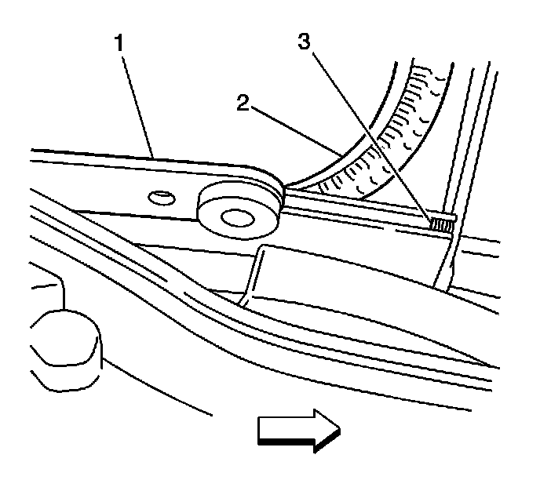

Sunroof Sunshade Motor/Actuator Replacement
Sunroof Sunshade Motor/Actuator Replacement
Removal Procedure

1. Remove the center and front sunroof windows. Refer to Sunroof Window Replacement (Front) (Service and Repair)Sunroof Window Replacement (Rear Vent) (Service and Repair)Sunroof Window Replacement (Center) (Service and Repair)Sunroof Window Replacement (Rear Stationary) (Service and Repair) .
2. Disconnect the motor/actuator electrical harness from either the front (6) or rear (2) sunshade motor/actuator being serviced.
3. Remove the motor/actuator to motor/actuator block screws.
4. Pull the sunroof motor/actuator up. The motor/actuator may need to be rocked side-to-side in order to release the sunshade motor/actuator drive gear from the cables.
5. Remove the sunshade motor/actuator.
Installation Procedure

1. Pull the shade completely closed against the sunshade stops (3).
2. Inspect the gap of the shade's extended edge to the sunroof frame for even spacing.
Notice: Refer to Fastener Notice (Fastener Notice) .
3. Install the motor/actuator and screws.
Tighten the screws to 5 N.m (44 lb in).
4. Connect the motor/actuator electrical harness to either the front (6) or rear (2) sunshade motor/actuator.
5. Install the center and front sunroof windows. Refer to Sunroof Window Replacement (Front) (Service and Repair)Sunroof Window Replacement (Rear Vent) (Service and Repair)Sunroof Window Replacement (Center) (Service and Repair)Sunroof Window Replacement (Rear Stationary) (Service and Repair) .
6. Perform the sunshade initialization procedure. Refer to Sunroof Front Window/Sunshade Initialization Process (Sunroof Front Window/Sunshade Initialization Process) or Sunroof Rear Window Initialization Process (Sunroof Rear Window Initialization Process) .